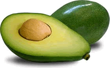

O abacate é o pseudofruto comestível do abacateiro (Persea americana), uma árvore da família da laureáceas nativa do México ou da América do Sul, hoje extensamente cultivada em regiões tropicais, inclusive nas Ilhas Canárias e na Ilha da Madeira.
O abacateiro cresce mais facilmente em solos leves, profundos, drenados e ligeiramente ácidos. As melhores condições climáticas são encontradas em regiões com chuvas em torno de 1 200 milímetros anuais.
São conhecidas mais de 500 variedades, de três origens diferentes: a guatemalteca, a antilhana e a mexicana. A parte comestível é a polpa verde-amarelada, de consistência mole, que envolve a grande semente.
Fonte: Wikipedia